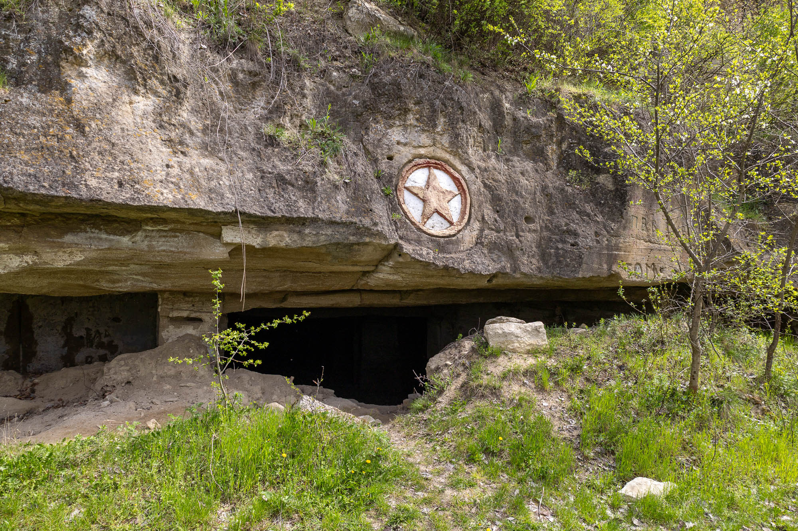
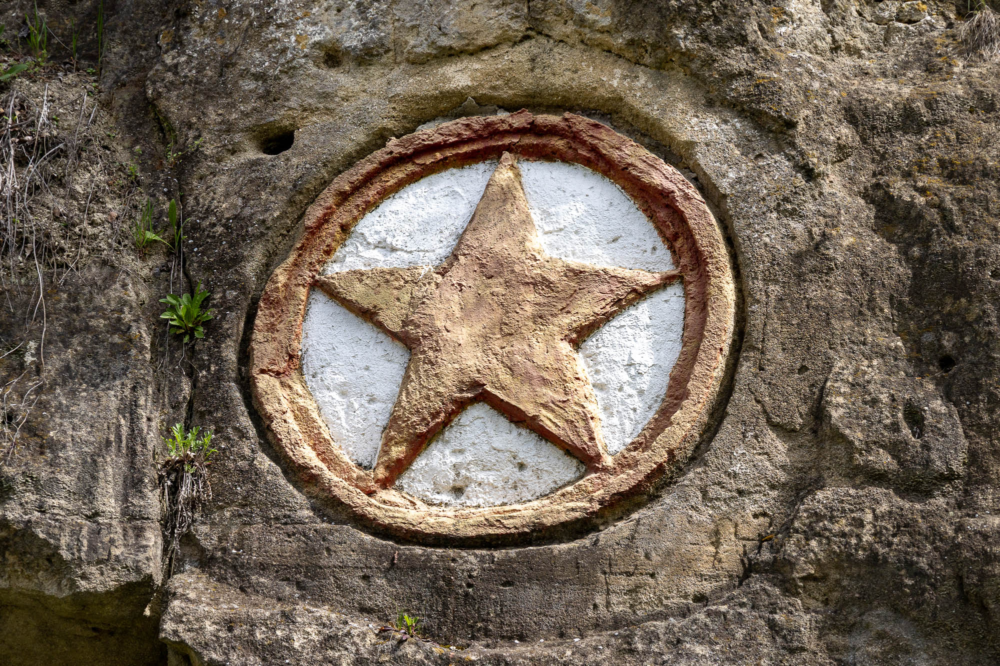
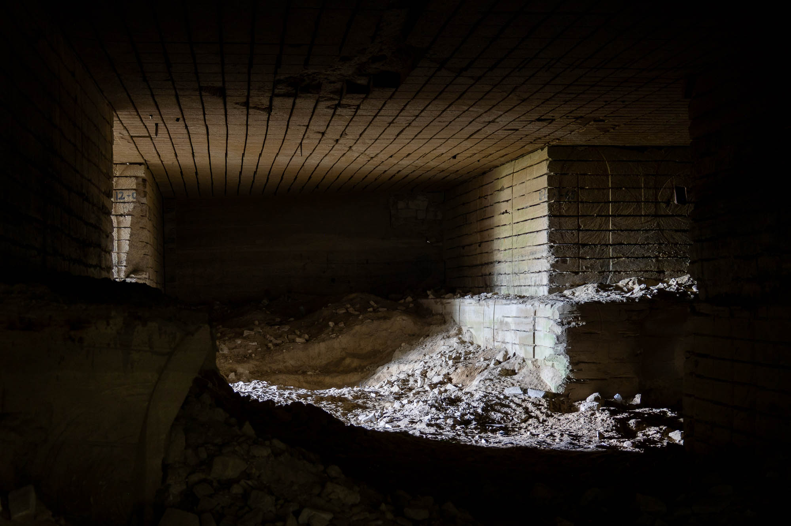
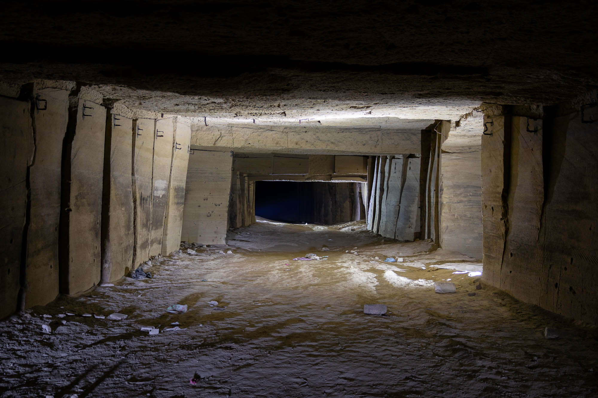
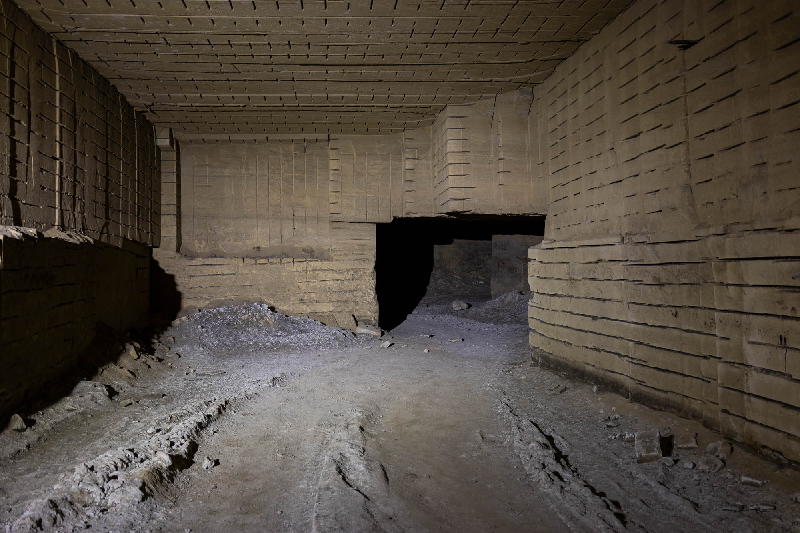
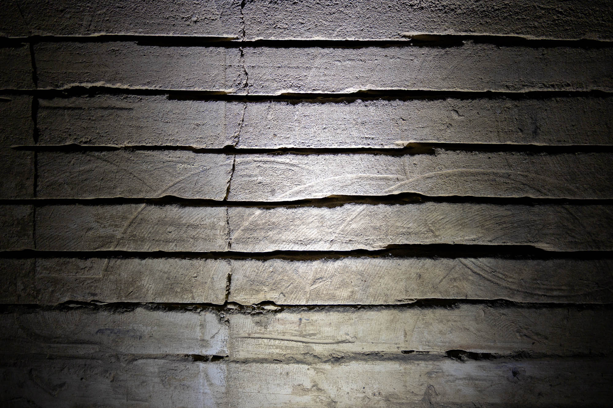
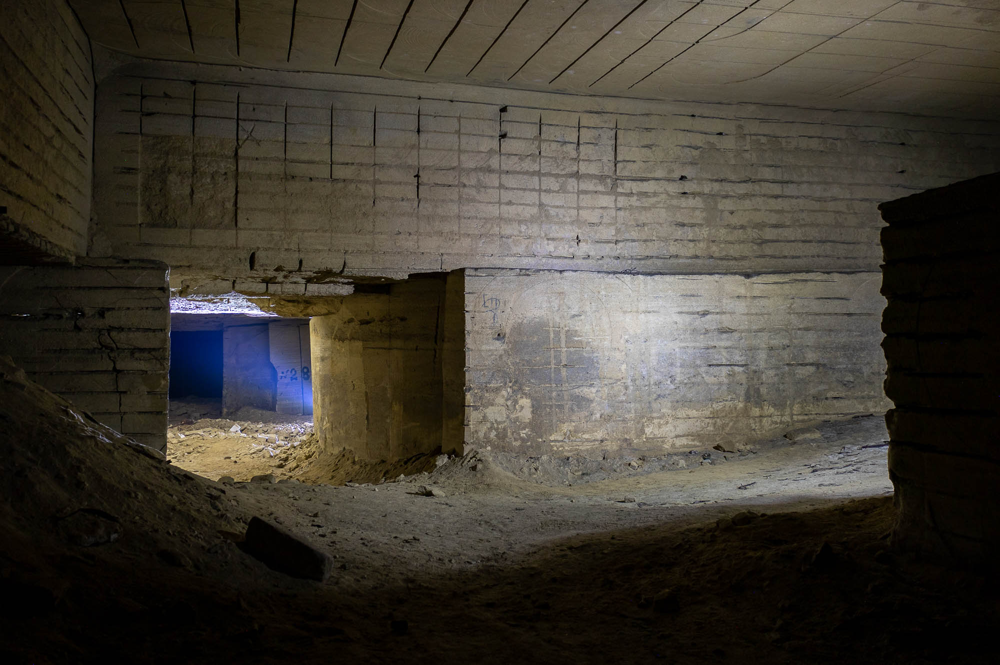
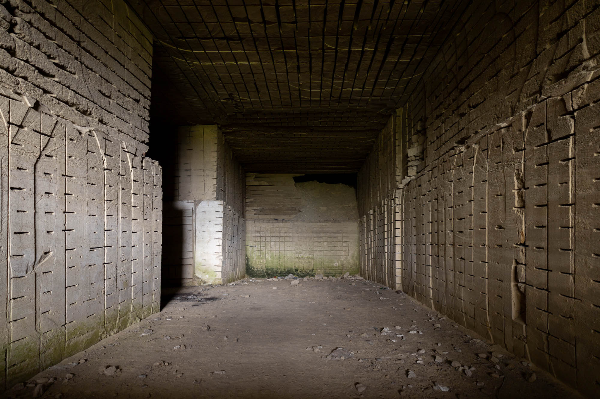
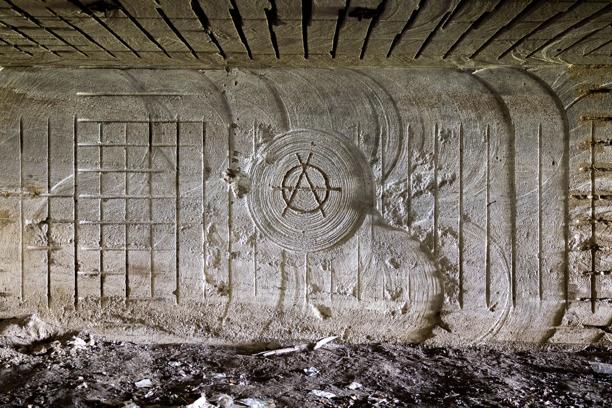

Once Moldova’s primary building material, limestone has left a rich history buried deep within the dark, underground tunnels carved out by its extraction.

Below a small village on the Dniester River is a former white ashlar limestone mine. It previously supplied building materials to the local area, but was shut in the early 1990s when Moldova was split in two. Along the river's edge are many small and large entrances, ranging from modern machine-cut car-sized tunnels to older cave-like tunnels from the days of hand tools.



Limestone mines are abundant in this region, with similar mines also existing in the area from Chisinau to Odessa. At least twenty-six underground mines exist along the Dniester River, with this one being by far the largest. This mine's galleries extend underground in maze-like ways, with branching paths, collapses, and dead ends all over the place.



The vast majority of the mine's length is machine-cut, leaving unique cut lines across all surfaces. The organisation of levels and rooms seemingly is random, but likely there was a logic that I couldn't see while wandering through the dark passages taking photos and videos.

